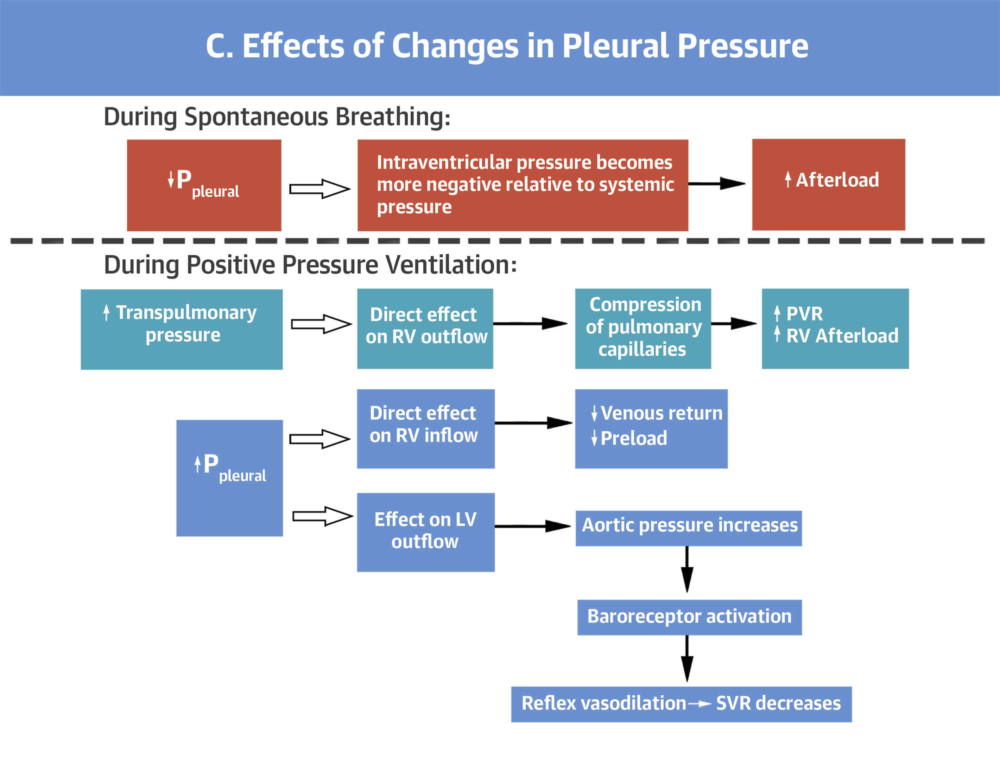

Respiratory Considerations
Hypoxia is a common lower respiratory manifestation of COVID-19, particularly among hospitalized patients, often with progression to acute respiratory distress syndrome (ARDS). Modalities to provide supplemental oxygenation and ventilation have consequences on the cardiovascular system, particularly among patients with underlying cardiovascular disease. Strategies for use of non-invasive and invasive mechanical ventilation in patients with COVID may be institution-specific based on equipement availability and staff expertise, in addition to COVID-specific considerations including expected disease trajectory and risks of aerosolization. The need for supplemental oxygenation/ventilation, basic management, and the hemodynamic consequences are reviewed here.
Incidence of Hypoxic Respiratory Failure
Among patients hospitalized with COVID-19, the need for supplemental oxygenation/ventilation is common:
- Of 191 hospitalized patients, 103 (54%) developed respiratory failure, 59 31%) developed acute respiratory distress syndrome (ARDS), 41 (21%) received high-flow nasal cannula oxygen therapy, 26 (14%) received non-invasive mechanical ventilation, 32 (17%) received invasive mechanical ventilation, and 3 (2%) received extracorporeal membrane oxygenation (ECMO) (Zhou, et al., Lancet, 2020)
- Of 187 hospitalized patients, 46 (24.6%) developed ARDS, with 45 (24.1%) requiring mechanical ventilation (Guo, et al., JAMA Cardiology, 2020)
Basics of Mechanical Ventilation
Common modalities for provision of supplemental oxygenation/ventilation include nasal cannula, facemask/nonrebreather, high-flow nasal cannula, continuous positive airway pressure (CPAP), bilevel positive airway pressure (BiPAP), and invasive mechanical ventilation.
- Nasal cannula, facemask, and high-flow nasal cannula: function predominately by increasing the fraction of inspired oxygen (FiO2), to varying degress, depending on the flow and amount of mixing with room air, with minimal/modest effects on airway pressures
- CPAP, BiPAP, and Invasive Mechanical Ventilation: in addition to increasing the fraction of inspired oxygen, these modalities have the ability to alter airway pressures (to varying degrees). These modalities may have hemodynamic effects in addition to their effect on oxgenation/ventilation
CPAP and BiPAP
Both CPAP and BiPAP are non-invasive strategies that utilize masks or helmets to provide support to the patient, and may be used to treat hypoxia (CPAP/BiPAP), increased work of breathing (CPAP/BiPAP), and hypercarbic respiratory faulure (BiPAP)
- CPAP: allows the user to set FiO2 and the amount of continuous positive airway pressure, predominately functioning to improve oxygenation (and work of breathing)
- BiPAP: allows the user to set FiO2, inspiratory positive airway pressure (IPAP), and expiratory positive airway pressure (EPAP). Increasing FiO2 and EPAP work to improve oxygenation. The pressure difference between IPAP and EPAP augments tidal volume, improving ventilation.
Invasive Mechanical Ventilation
Invasive mechanical ventilation utilizes an endotracheal tube and ventilator to provide invasive oxygenation/ventilation support to the patient. Several parameters are avialable to the user to manipulate both oxygenation and ventilation. At UPHS, the primary mode of ventilation for patients with ARDS is assist-control/volume-control, which allows the user to provide fully-supported breaths to the patient and guarantee a minimum minute-ventilation.
Common settings
- Tidal Volume: the target tidal volume in ARDS is 6cc/kilogram of predicted body weight (based on the patient’s height). In combination with respiratory rate, tidal volume affects ventilation (and acid-base status). The target tidal volume is lower than in a spontaneously breathing patient to minimize volutrauma and ventilator-associated lung injury.
- Respiratory Rate: the respiratory rate (in combination with tidal volume) affects ventilation (and acid-base status). Because the initial tidal volume is low, the initial respiratory rate should be higher than normal in order to match the increased minute-ventilation requirements of critically-ill patients.
- Fraction of Inspired Oxygen (FiO2): FiO2 is often set initially at 100%, but should be titrated to goal peripheral oxygen saturation (SpO2) >92%
- Positive End-Expiratory Pressure (PEEP): PEEP allows the user to increase end-expiratory pressure to ensure alveoli remain open for gas exchange. When PEEP is set too low, alveoli may de-recruit with each breath, leading to atelectotrauma and ventilator-associated lung injury. When PEEP is set too high, alveoli may experience barotrauma and ventilator-associated lung injury. PEEP may also have hemodynamic effects.
Monitoring parameters
- Pulse Oximetry/PaO2: The effectiveness of oxygen supplementation may be monitored peripherally with the use of pulse oximetry, or invasively with the use of an aterial blood gas and measurement of the partial pressure of dissolved oxygen. Goal peripheral oxygen saturation is typically >92% (although may be lower in patient’s with underlying hypercarbic lung disease like COPD), and goal PaO2 55-80 mmHg.
- End-tidal CO2/PCO2: The effectiveness of ventilatory support may be monitored non-invasively with the use of an end-tidal CO2 monitor, or invasively using venous or arterial blood gases. Goal pH >7.15 in ARDSnet trials, UPHS pH goal >7.20.
- Plateau Pressure: To minimize ventilator-induced lung injury, the plateau pressure (measured using an inspiratory pause maneuver) should remain <30 cm H2O. Minimizing Driving Pressure (difference between plateau pressure and PEEP) has been identified as a predictor of improved outcomes in ARDS. This can be acheived by asking a respiratory therapist to perform “PEEP titration” (adjusting PEEP to minimize driving pressure while keeping plateau pressure <30 cm H2O).
Hemodynamic Effects of Mechanical Ventilation
See Avilar, et al., JACC 2018: 